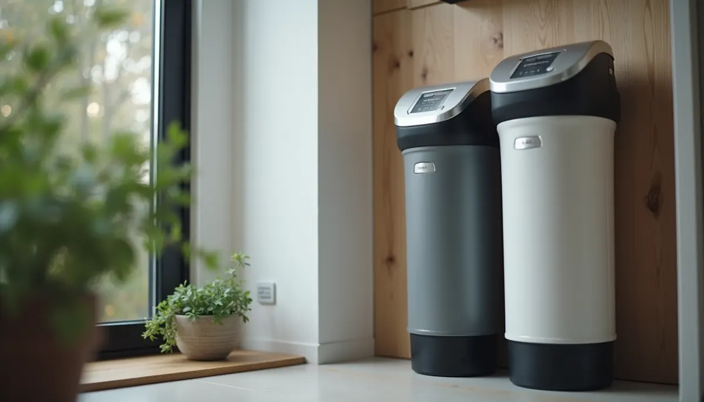
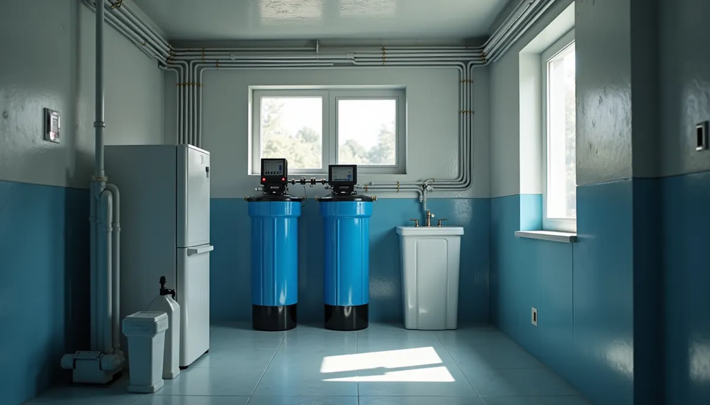
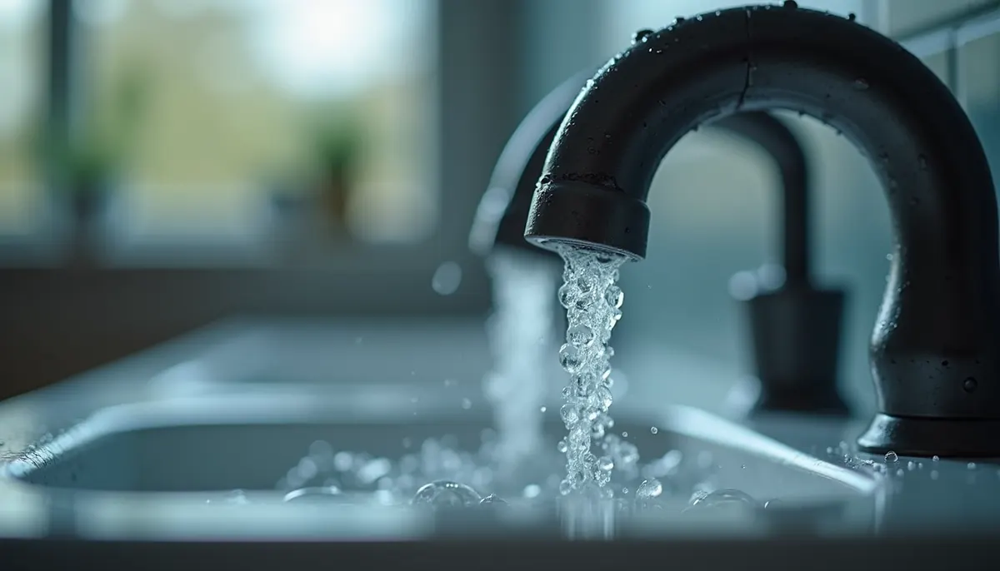

Water softeners have become essential household appliances for many families, especially in regions dealing with hard water problems. The choice between salt-based and no salt water softeners can be overwhelming. In this post, we'll break down the key differences between these two systems and help you determine which one is right for your home.
Understanding Water Hardness
Hard water is characterized by high levels of minerals, mainly calcium and magnesium. This can lead to a range of issues, including scale buildup in pipes and appliances, dull laundry, and even skin irritation. In fact, studies show that nearly 85% of households in the U.S. encounter hard water, which can significantly affect both plumbing systems and personal care.
Softening hard water not only boosts the longevity of your plumbing and appliances but can also enhance your quality of life by making your skin feel softer and your hair shinier.
What is a Salt-Based Water Softener?
A salt-based water softener is the most prevalent type of softening unit. It employs a process called ion exchange, where sodium ions replace harmful minerals such as calcium and magnesium in hard water. Water flows through resin beads that attract these hardness minerals, effectively reducing scale buildup in your plumbing and appliances.
Research indicates that salt-based systems can reduce hardness levels by 80% or more. This level of effectiveness contributes to smoother operation in dishwashers, washing machines, and even your showerheads, helping you save on repair costs in the long run.
Key Features of Salt-Based Water Softeners
- Effective Removal of Hardness: Salt-based softeners are known for their high efficiency. Users often report a noticeable difference in water quality, with better results in terms of cleaning and appliance maintenance.
- Regular Maintenance Required: One downside is the need for regular salt refills, which can become a hassle. On average, a family of four may use around 40-50 pounds of salt per month.
- Water Usage During Regeneration: The regeneration process can consume up to 60 gallons of water. This is particularly important for households interested in conserving water.
What is a No Salt Water Softener?
In contrast, no salt water softeners use alternative methods to treat hard water. Technologies like template-assisted crystallization transform hardness minerals into harmless particles, preventing scale buildup without truly softening the water. While these systems may be less effective at addressing extreme hardness—often only suitable for water with hardness levels below 10 grains per gallon—many homeowners appreciate their simplicity.
For example, a no salt system might serve a household with moderate hard water levels effectively, helping to maintain cleaner surfaces and reduce minor scale buildup.
Key Features of No Salt Water Softeners
- Low Maintenance: No salt means less upkeep. Users do not need to purchase salt, which can lead to savings over time.
- Environmentally Friendly: These systems do not add sodium to wastewater, making them more eco-friendly. It's estimated that about 8 million tons of salt are used each year for water softening in the U.S.
- Prevention, Not Removal: While they prevent scale formation, they do not remove hardness minerals entirely, meaning they might not resolve all hard water problems in every home.
Comparing Performance
In terms of performance, salt-based water softeners generally outperform no salt systems in effectively removing hardness. For instance, a typical salt-based system can reduce calcium concentrations from 180 mg/L to nearly 40 mg/L, while a no salt system might only achieve a temporary transformation of those minerals.
For households facing severe hard water issues, a salt-based unit is often the more reliable choice. Conversely, if you have moderately hard water, a no salt option may suffice, especially if ease of maintenance is a priority.
Health Considerations
Health impacts of water softeners are worth noting. Those on sodium-restricted diets might lean toward no salt systems to avoid added sodium. However, the amount added by salt-based softeners is relatively low. For example, drinking softened water may add about 50 mg of sodium per liter, which is generally viewed as safe for most individuals.
Cost Factors
Cost is a critical factor in choosing between these systems. Salt-based water softeners tend to have a higher initial investment—with averages ranging from $2,200 to $4,500—and also incur ongoing costs for salt refills. On the other hand, no salt systems usually have lower upfront costs—around $1,500 to $2,800—but their long-term effectiveness can vary based on water hardness.
Making the Right Decision
Selecting between salt-based and no salt water softeners comes down to your specific needs and circumstances. Salt-based systems provide superior performance in tackling hard water challenges, while no salt systems present a low-maintenance, eco-friendly alternative.
Before deciding contact Angle Stop Plumbing for a detailed evaluation of your homes water condition by calling 615.398.3048, consider critical factors such as your water hardness level, maintenance preferences, and any health concerns within your family. With this knowledge, you will be well-equipped to choose the right water softening solution for a better living environment.


